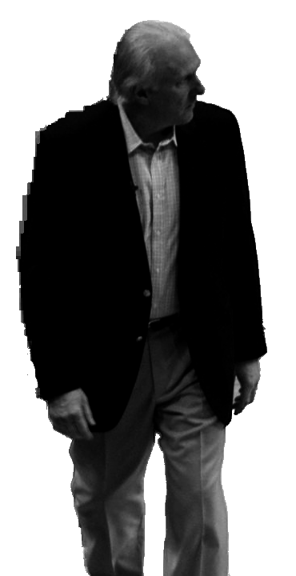
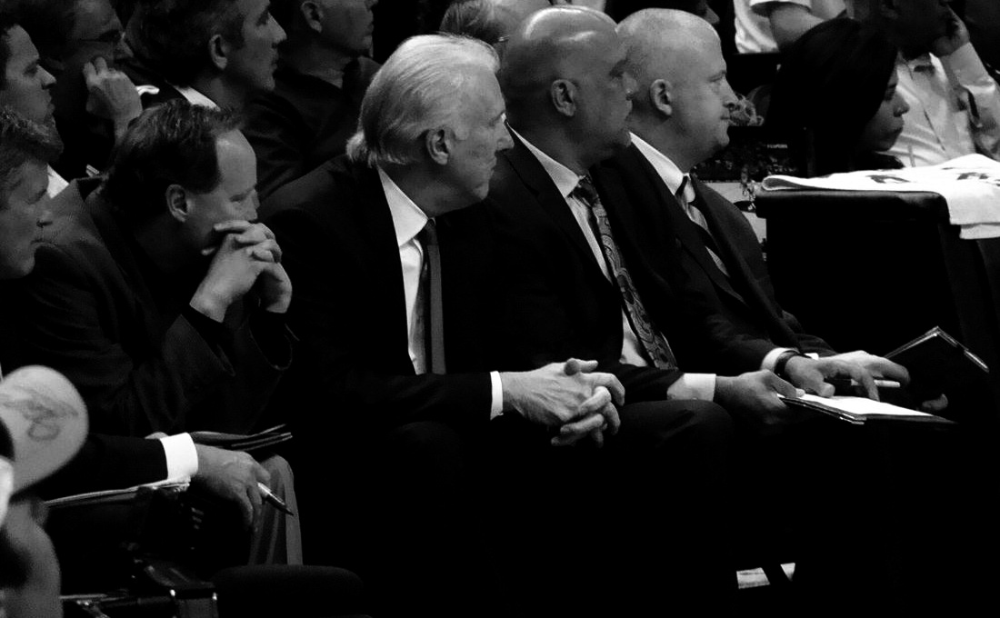

SPURS
9
5
HEAT
9
2
TIEMPO
0:05.2
MARCADOR: RECREACIÓN
PERDIDO
GREGG POPOVICH
SAN ANTONIO SPURS
FOTO DE 2011 · ZERESHK · CC BY-SA 3.0
JUN
18
2013
FINALES NBA · 6.º PARTIDO
MIAMI
SPURS
95
HEAT
92
0:05.2
RECREACIÓN
PISTA: RECREACIÓN

GREGG POPOVICH
SAN ANTONIO SPURS
FOTO DE 2010 · MIKE · CC BY-SA 2.0
«
SEGÚN BRETT BROWN, SU ASISTENTE (ESPN, 2019)
RESERVA
CELEBRACIÓN
PUERTA
POP
MESA, PUERTA Y FICHAS: RECREACIÓN

EL BANQUILLO DE LOS SPURS
CON BRETT BROWN, QUE LO CONTÓ
FOTO DE 2010 · ZERESHK · CC BY-SA 3.0
JUNIO
2014
UN AÑO DESPUÉS
FINAL 2014 · MISMO RIVAL
SPURS
4
HEAT
1
RECREACIÓN
CAMPEONES 2014
RECEPCIÓN A LOS SPURS, ENERO DE 2015 · FOTO OFICIAL DE LA CASA BLANCA · DOMINIO PÚBLICO · PORTADA: RECREACIÓN
FOTOS: MIKE (CC BY-SA 2.0), ZERESHK (CC BY-SA 3.0),
CASA BLANCA (DOMINIO PÚBLICO) · VÍA WIKIMEDIA COMMONS
MARCADOR, PISTA, MESA Y PUERTA: RECREACIÓN
FUENTES: ESPN, BUSINESS INSIDER, NBA.COM